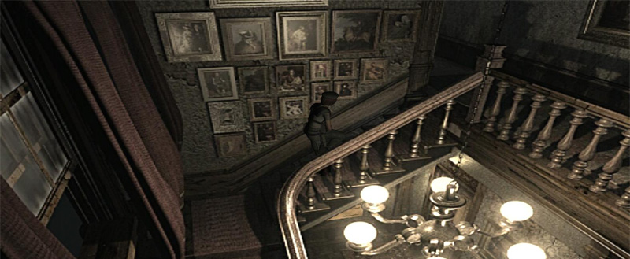
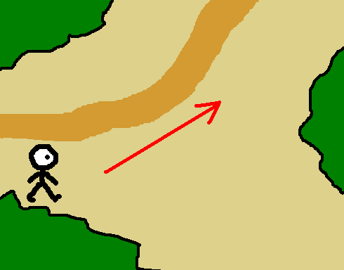
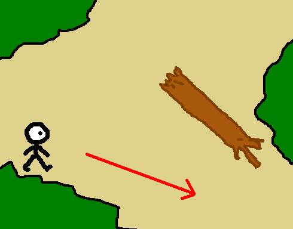
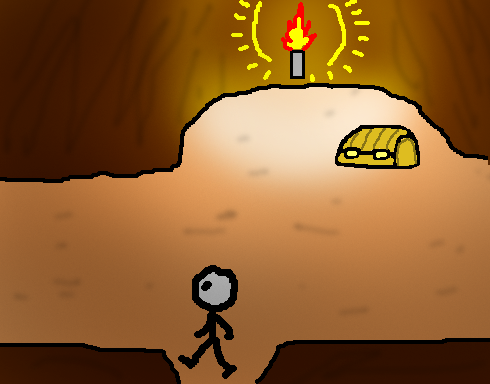
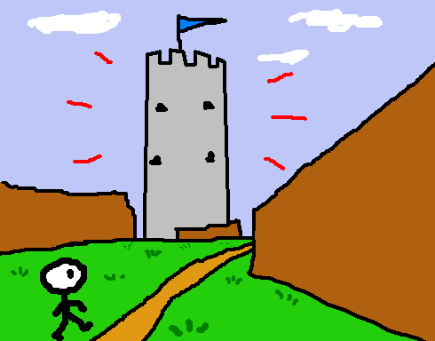
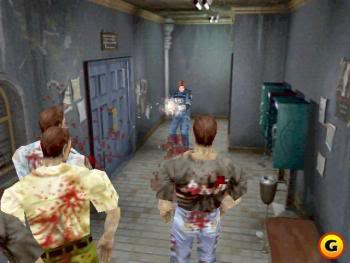
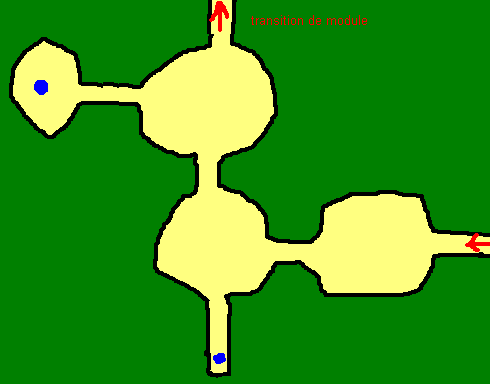
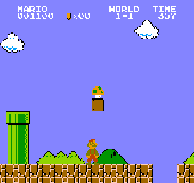

Éléments de level design II
L'article original est écrit par Relm publié par E-magination (avril 2008).
Les « ingrédients » sont sûrement l'une des choses les plus importantes dans le level design. Ils doivent être utilisés de façon réfléchie, de la même façon qu'une recette de cuisine : à la base, tous les ingrédients sont bons, mais si vous les utilisez mal, la préparation sera mauvaise.

Les différents ingrédients du level design.
Quels sont les ingrédients du level design ?
- Les ennemis
- Les Personnages Non Jouables (PNJ)
- Les boss
- Les obstacles
- Les élements de décor interactifs
- Les points de sauvegarde
- Les power up
- Les armes
- Les objets à collectionner (collectibles)
C'est la totalité des éléments liés au gameplay qu'un level designer a à sa disposition.
Les ennemis.
Les ennemis servent à ralentir la progression du joueur. Il doit être facile de distinguer un ennemi d'un PNJ inoffensif et un type d'ennemi d'un autre. Chaque ennemi doit posséder ses forces, faiblesses et compétences propres.
Les PNJ.
[En anglais, on parlera de Non Playable Character, soit NPC.]
Il peut s'agir d'alliés du joueur, d'arbitres, de vendeurs, d'otages, etc. Ils peuvent donner des infos ou simplement contribuer à une certaine ambiance (figurants). Ils ne porteront pas atteinte à la vie du joueur. Le joueur ne peut pas les contrôler. Un PNJ ne peut pas être un ennemi, mais il peut être un adversaire. La différence entre les deux réside dans l'affrontement : un combat contre un adversaire se joue souvent en un contre un.
Les boss.
Le boss fait office d’examen sur le gameplay et les techniques de jeu que le joueur a dû apprendre jusqu’à présent. Plus difficile à vaincre qu’un ennemi normal, il illustre la finalité d’une partie du jeu.
Les obstacles.
Ils empêchent le joueur d’avancer librement en le bloquant (un mur) ou en le tuant (un trou). Ils sont non-interactifs. Il s'agit souvent d'un élément du décor ou justifié par le décor. Le plus souvent, un obstacle est immobile ou ne réalise que des mouvements simples.
Les éléments de décor interactifs.
Tout ce qui est décoratif à la base, mais avec lequel le joueur peut interagir. Un décor interactif doit être différentiable d’un décor non-interactif. Il peut devenir aussi un obstacle suite à une interaction avec le joueur. Par exemple, dans Mario Bros, les blocs « ? » sont à la base des éléments de décor interactifs, mais une fois que le joueur a tapé dedans, ils deviennent de simple obstacles.
Les points de sauvegarde.
Ils permettent au joueur de sauvegarder sa progression momentanément ou de façon permanente. Ils doivent être utilisés entre chaque partie d’un niveau suivant la façon dont la difficulté varie au cours de celui-ci. Ils servent à ne pas frustrer le joueur inutilement et à lui permettre d’arriver à son but plus facilement.
Les power up.
Munitions, vies, bonus d’invincibilité, trousses de soin, etc. Ils aident le joueur sur son chemin et le récompensent. Ils doivent apparaître suivant un rythme logique et pertinent. Il peuvent être permanents ou temporaires. Ils doivent être différentiables du décor. Ils doivent être cohérents avec leurs attributs (le joueur doit comprendre l’effet d’un power up rien qu’en le regardant).
Les armes.
Elles augmentent la force du joueur, lui offrent de nouvelles possibilités. Elles sont permanentes (une grenade dans un jeu est un power up et non une arme).
Les objets à collectionner (collectibles).
Il s'agit d'objets sans utilité première, qui doivent être collectionnés pour obtenir une récompense. Par exemple, une vie pour cent pièces dans Mario Bros. Leur collecte peut être facultative. Ils permettent aussi de guider le joueur en formant des directrices (nous en reparlerons dans la suite) en faisant office d’appât. Ils ajoutent aussi à la replay value. Ils doivent être facilement différentiables d’une arme ou d’un power up (pour cela, on peut jouer efficacement sur les quantités disponibles dans le niveau).
C'est tout ? Oh que non ! Après ce chapitre un peu technique, parlons un peu de l’utilisation concrète de ces divers éléments dans un niveau de jeu. L’intégration de ces « ingrédients » dans un jeu est sûrement l’une des choses les plus importantes. La façon dont le level designer les placera dans le niveau aura une influence décisive sur la compréhension du joueur. C'est quelque chose qu'il ne faut pas sous-estimer. Il faut se rappeler que l’on invite le joueur dans un monde qu’il ne connaît pas et qu'il faut donc lui apprendre les choses comme à un « nouveau né ». Le joueur n’est jamais bête : ça peut être dur à admettre, mais si un joueur ne comprend pas un élément du jeu, c’est que le travail de level design a été mal fait.
Le but n’est pas de montrer au joueur qu’on peut le perdre… C’est tout le contraire !
Directrices, repères, modules et appâts.
Je vais présenter ici quatre outils très importants pour un level designer. Judicieusement utilisés, ils permettent au joueur de ne pas se sentir perdu dans un univers inconnu ou frustré par la malchance. Le joueur, rappelez-vous, doit se sentir récompensé, fort, mais surtout pas frustré.
Dans un jeu en 3D avec une caméra mobile, il est bien plus simple de se perdre que dans un jeu 2D, mais les principes restent les mêmes. Vous vous êtes déjà sûrement dits devant un jeu « Je ne sais plus par où je suis venu » ou « Je ne sais pas où je vais, ni pourquoi ». Quand un joueur un minimum attentif ressent cela, c’est le plus souvent le résultat d'un level design bancal. Il faut savoir qu'il est difficile d'éviter cet écueil et de créer un level design logique et cohérent pour le joueur.
Mais commençons par les bases !
Directrices.
Une directrice est une ligne qui dirige le joueur là ou le level designer souhaite l'amener. Il peut s'agir :
- D'un décor : un chemin de terre sur le sol, des fils électriques dans une rue ;
- D'un obstacle : un tronc d'arbre en travers de la route.
La directrice n’est pas quelque chose qui oblige le joueur à la suivre, c’est un élément discret qui guide le joueur sans qu’il ne s’en rende compte. Il est possible de concevoir un labyrinthe où un joueur trouvera plus facilement la sortie en utilisant des directrices. Il aura eu l’impression d’avoir eu de la chance ou simplement d’avoir eu du flair. Il peut aussi remarquer et comprendre la présence une directrice et s’en servir volontairement.

Dans ce plan en vue de haut, un chemin est dessiné sur le sol. Intuitivement le joueur va être guidé vers le passage au nord.

Même plan, mais cette fois-ci, un tronc d’arbre est couché sur le sol. La trajectoire du joueur va être infléchie par le tronc et aller vers le bas. Intuitivement le joueur va être guidé vers le passage au Sud.
Bien sûr, il ne s'agit pas d'ingrédients magiques : cela ne marchera pas si vous ne les utilisez pas correctement. Mais c’est une bonne base de travail. L’effet produit dépend aussi du joueur. Certains joueurs ont tendance à se dire : « le chemin semble être par là, je vais donc aller de l’autre côté avant pour voir ». Cela ne signifie pas que c’est une faille, mais justement que ça marche tout à fait ! Le joueur inattentif ou casual trouvera vite le chemin de l’arrivée et ne se sentira pas perdu, alors que le joueur attentif ou hardcore trouvera un chemin secondaire offrant par exemple un bonus et se sentira récompensé de ne pas avoir pris le chemin le plus court.
Vous pouvez aussi utiliser l’exemple à l’inverse si votre but est :
- De faire découvrir au joueur un endroit « caché » plus facilement ;
- De perdre le joueur (à utiliser intelligemment).
Repères.
Un repère est un élément qui attire le regard du joueur. Il lui permet aussi de se repérer dans l'espace. Il peut s'agir :
- D'un (gros) objet ;
- D'un contraste visuel (lumière, mouvement, etc.).
Le repère est quelque chose qui va toujours sauter aux yeux du joueur, contrairement à une directrice. Cela permet au level designer de donner au joueur une idée de sa position ou de guider son regard vers un autre élément.

Dans ce plan, la torche émet de la lumière, ce qui crée un contraste avec la pénombre naturelle de la grotte. Le regard du joueur qui arrive est immédiatement attiré par ce contraste, et donc par le coffre. Le repère a servi à faire remarquer ce coffre au joueur. Cela aurait aussi pu être quelque chose de plus subtil, comme une fissure dans le mur (si l'on imagine que, comme dans un Zelda, le joueur peut creuser un tunnel dans un mur fissuré).

Dans ce plan, le joueur se voit proposer plusieurs chemins, mais il voit depuis n'importe quelle position la grande tour au milieu de la zone. Il peut donc se repérer dans l’espace rapidement. Ce genre de repère est très utile dans les maps multijoueurs dans les FPS par exemple. Cette tour peut aussi être le « but », l'endroit où doit aller le joueur. On lui aura dit auparavant de se rendre dans la grande tour et dès qu’elle sera dans son champ de vision, le joueur la remarquera et comprendra son but.
Un repère peut aussi fonctionner comme une directrice. Imaginez une rangée de casiers fermés à l'exception d'un seul (contraste de forme) : le joueur sera tenté d’aller regarder de plus près le casier ouvert.
Un repère peut aussi servir à attirer le regard du joueur afin d'activer un élément de gameplay : par exemple, imaginons un survival horror où le joueur arrive dans une salle avec plusieurs fenêtres. Sur une seule d'entre elles, les rideaux flottent légérement (contraste de mouvement). Le regard du joueur sera directement attiré par cette fenêtre. Le level designer peut décider de faire apparaître un monstre à ce moment-là. Il laissera quelques secondes au joueur pour remarquer le repère, puis :
- il fera apparaître un monstre de derrière les rideaux (s'il veut aider le joueur) ;
- il fera apparaître le monstre dans la direction opposée (s'il veut surprendre et piéger le joueur).
Modules.
Un module est un transition vers la suite du jeu. Il sert à informer le joueur qu'il va passer dans un nouvel endroit. Techniquement, il s'agit d'une map différente dans le moteur du jeu.

Dans Resident Evil, les portes sont pratiquement toutes des modules : le joueur sait qu’en y pénétrant, il passe à une nouvelle map et que, par exemple, des zombies ne peuvent plus le suivre.
Ici, le joueur sait qu’il peut visiter la pièce pour y trouver des objets ou tuer des zombies et il sait aussi que s’il empreinte la porte bleue à gauche, il arrivera dans une nouvelle zone. Cela permet au joueur de ne pas se sentir frustré. Car il nous est tous arrivé au moins une fois d’avancer tranquillement et de se rendre compte soudainement d'un changement de map, voire du début d'une séquence de boss.

Sur cette image, on peut voir une vue de haut d'un niveau. C’est une forêt avec plusieurs chemins et au nord se trouve un village. Chaque « salle » est grande et les points bleus sont des trésors.
Le joueur peut en explorant rater les chemins qui mènent aux trésors et arriver sans s’en rendre compte à la fin du niveau. Il touchera alors le bord de l’écran et sera téléporté dans le village ou une scène se lance et dure une vingtaine de minutes : c’est possible et très énervant. En voyant cela, le joueur se dit : « J'aurais voulu voir ce que j’avais raté dans la forêt ».
Pour éviter cet écueil, on peut :
- Expliquer en montrant au joueur dès le début du jeu quels sont les moyens de sortir d’une map (comme les portes dans Resident Evil) ;
- Proposer une mini-map ;
- Utiliser des décors différents à l'approche de la transition (dans notre exemple du village, un sentier de terre qui se change en route pavée).
Appâts.
Un appât est un élément qui, contrairement aux précédents, fait partie intégrante du gameplay. Il peut donc s'agir d'ennemis, de PNJ, de bonus, etc. Il fonctionne souvent comme un repère. Un appât est là pour attirer le joueur et lui faire prendre des décisions, en allant parfois même à l'encontre de l'action des outils précédents.
Imaginons une scène dans un jeu comme Mario Bros. Le joueur fait apparaître une vie supplémentaire en frappant par inadvertance invisible et cette vie se met à avancer le long du chemin. Le joueur tentera de l'attraper, quitte à mettre sa vie à péril.

Les appâts peuvent aussi servir de directrices : des ennemis en ligne dans un FPS servent à guider le joueur dans un labyrinthe.
Voilà ! J’espère que cet article pourra vous être utile et si vous avez des questions, n’hésitez pas à les poser !
Ajouter un commentaire
Commentaires

Dark Souls est un jeu qui n'est pas grand public pas seulement pour sa difficulté. En fait les jeux de type arcade des années 80, 90 étaient difficiles mais marchaient très bien : il n'est pas important de FINIR le jeu pour la plupart des gens surtout à cette époque, il ne faut pas l'oublier. Le principal problème de Dark Soul vient que c'est un univers heroic fantasy, même les plus populaires RPG ne sont pas si populaires, c'est pas un univers qui attire tant de monde que ça en fin de compte.
Merci pour ces précisions. En fait, si j'ai posé cette question c'est surtout parce que pour moi, Dark Souls un plus qu'un excellent jeu, notamment car il brise les codes, mais que justement, il ne correspond apparemment pas aux critères de bases qu'un jeu doit remplir tels que "ne pas frustrer le joueur" ou encore "lui faire croire qu'il est fort" (surtout celui-là).
Malheureusement, je pense que la cible des jeux "Souls" est bien loin du grand public, et que donc ce genre de jeu "frustrant" restera très rare…

@Ninseg-Sosoft > L'image en tête d'article c'est le remake de Resident Evil sur Gamecube (c'est marqué quand on clique dessus). Je le recommande très fort =)
Je pense que la frustration est une notion un peu vaste et qui mériterait qu'on s'y attarde. L'article sur le level-design évoque de la frustration de type « ce jeu est mal fait, je m'ennuie » ; dans Dark Souls c'est plus de la frustration de machine à sous « Hah! J'étais si près du but, la prochaine fois c'est bon! ». Enfin je crois.
Salut ! Quelques questions : de quel jeu est tiré la première image ? Tu parles beaucoup de frustration, mais, dans un jeu comme Dark Souls (très bon test d'ailleurs), le public ciblé n'aime-t-il pas cet état de frustration ? Si c'est le cas, comme définir cette cible en termes de Game Designer ?
bravo, super article !
Super article, très instructif, merci !
Super article ^^
J'avoue ne pas avoir beaucoup travaillé le level-design de Magdales, mais c'est pas l'envie qui me manque.
Merci pour tout ces éléments de compréhension !
kéké